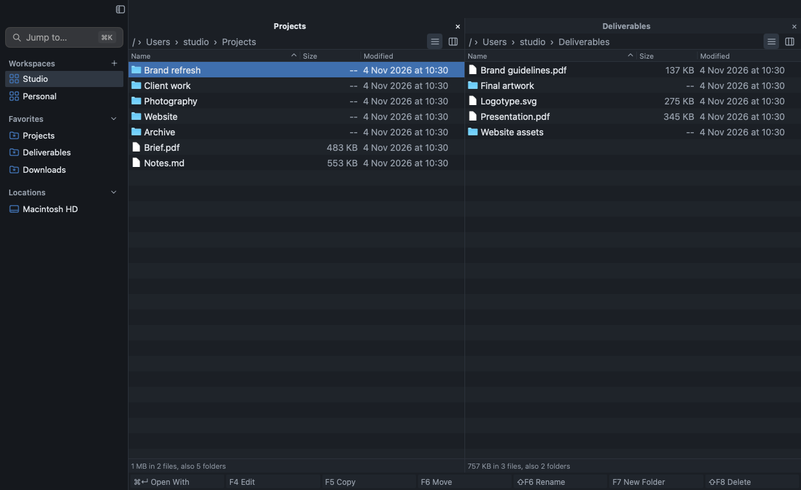
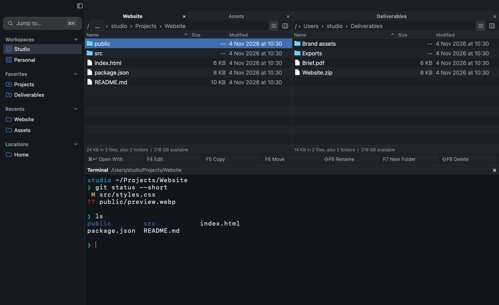

为 macOS 而生的原生双栏文件管理器
操作流畅，
思路不断。
项目在左，交付在右。熟悉的快捷键、独立的标签页，让每一步操作都顺着你的思路。
下载 macOS 版 Windows 与 Linux 下载公开版本 v1.2.0 发行说明

两个位置，同一个视野。
为键盘操作设计。
原生界面，日常工具。
你的双手，
已经知道怎么做。
预览、切换、打开终端。常用动作就在指尖，不必为了下一步操作打断眼前的工作。
先看清，再继续。
选中文件，按下空格键。Quick Look 原生预览面板会在需要的时候出现。
文件与命令行，
在同一个工作现场。
浏览文件，运行命令，再回到文件。集成 Terminal 就在双栏下方，少一次窗口切换，多一点连贯。


跟随当前目录
在文件面板中进入文件夹，终端工作目录随之同步，接着执行下一条命令。
每个标签页，各自继续
标签页保留独立终端会话。收起面板后会话仍在，回到标签页就能继续。
留出刚好的空间
拖动终端上边缘调整高度。明暗配色随应用外观切换，让命令行融入工作区。
工作有两面，
工具不必分心。
用工作区保存两侧的标签页与目录布局。回到项目时，让熟悉的位置一起回来。
浅色、深色，选择适合你的工作环境。标签页保留各自的终端，让文件与命令行始终在手边。
了解工作区与标签页开发预览，使用示例工作区
把工作留在顺手的位置。
为你的下一个项目，留出清晰的双栏。
公开版本 v1.2.0 · 按系统与芯片选择下载
x64 适用于 Intel / AMD 64 位芯片；ARM64 适用于 ARM 芯片。 SHA256 校验文件